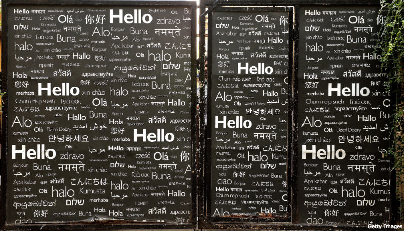

نویسنده: لیلا معینی
روز ۲۱ فوریه (دو اسفند)، روز جهانی زبان مادری است. برای بسیاری از ما شاید زبان مادری خاطرات خوش کودکی، لالاییها و قصههای سینه به سینه گشته در خانواده و میراث فرهنگی را تداعی کند، اما کم نیستند کسانی که زبان مادری برایشان با تجربه تبعیض، محرومیت، نادیده گرفتهشدن و به حاشیه رانده شدن گره خورده است.

اینکه زبان مادری شما با زبان و رسمی و غالب مملکت شما یکی باشد یا نه، تجربه شما را از مفهومی واحد تا این حد متفاوت میسازد.
در این مطلب کوتاه، به مناسبت این روز به رابطه زبان مادری و مشارکت سیاسی شهروندان در روند انتخابات میپردازیم.
اگر زبان را یکی از ابزارهای مهم و اساسی انتقال فرهنگ بدانیم، تنوع زبانی در یک کشور نمادی از غنای فرهنگی آن کشور است. در اینجا اما از کسانی حرف میزنیم که زبان مادریشان با زبان رسمی و غالب کشور یکسان نیست و همین موضوع در بسیاری موارد منجر به عدم امکان دسترسی برابر آنها به روند انتخابات و به حاشیه رانده شدنشان از مشارکت سیاسی شدهاست.
محبوبه و زرغونه هر دو اهل ولایت فریاب (در شمال غرب افغانستان) هستند. و هر دو ازبکاند و فارسی خیلی کم میدانند و پشتو اصلا. هر دو علاقمند به شرکت در انتخابات ریاست جمهوری پیش رو در افغانستان هستند ولی از پیامهای تبلیغی ومناظرههای تلویزیونی نامزدهای ریاست جمهوری که اکثرا به زبانهای فارسی وپشتو پخش میشوند، هیچ سردرنمیآورند.
شفیع بیک، یکی از اقوامشان که فارسی میداند از به نقل از آنها به من میگوید:
« آنها هر دو نمیدانند چند نامزد ریاست جمهوری وجود دارد، هرچند میگویند در انتخابات اشتراک میکنند، اما نمیفهمند برای کدام نامزد رای بدهند. پرسیدم پرس چطور رای میدهید؟ گفتند، از اعضای فامیل از اقارب خود پرسان میکنیم که به کی رای بدهیم. درمورد انتخابات درتلویزیونها چیزهای که نشر میشود بیشترنمیفهمند و ازهیچ چیز خبر ندارند. آنها میگویند در مورد انتخابات اگر به زبان اوزبیکی برنامهها نشر میشد میفهمیدند.»
محبوبه و زرغونه تنها کسانی نیستند که به دلیل اینکه زبان مادریشان با زبانهای رسمی و غالب افغانستان یکی نیست از مشارکت در انتخابات و رسیدن به بخش مهمی از حق مشارکت شهروندی و حقوق سیاسی خود باز میمانند.
در کشوری چون افغانستان که دارای تنوع زبانی و فرهنگی است، این چالشی است که ترکمنها، دیگر ولایات ازبک، بلوچها، پامیریها و دیگر گروههای در اقلیت، با آن روبرو هستند.
حمیرا ثاقب، مدیر خبرگزاری زنان افغان، براین باور است که، زنان به دلیل بافت سنتی و اجتماعی در بسیاری از مناطق افغانستان دسترسی کمتری به سوادآموزی و امکان یادگرفتن زبانهای غالب دارند و عملا مردها هستند که بیشتر پشتو و فارسی میدانند. از این حیث هم، در مشارکت سیاسی بیشتر به حاشیه رانده میشوند و در صورت تمایل به مشارکت هم وابسته به دیگران (عموما مرد خانواده) هستند.
قانون اساسی افغانستان، سه زبان فارسی، پشتو و ازبک را به رسمیت میشناسد ولی هیچ قانونی وجود ندارد که نامزدهای انتخاباتی و برگزارکنندگان انتخابات را مکلف به تهیه و تدارک مواد تبلیغاتی به زبانهای دیگر بکند. در حقیقت حق دسترسی برابر همه شهروندان به روند انتخابات و شرکت در آن نادیده گرفته میشود، حقی که شهروندان فارغ از زبان، نژاد، سن، جنسیت و رنگ پوست باید از آن برخوردار شوند.
از کمال که زبان مادریاش عربی است، از تجربهاش در زمان برگزاری انتخابات در ایران میپرسم، از تجربه مشارکت در انتخابات و کسانی که فارسی نمیدانند: « در حقيقت در منطقه ما در اهواز بعضی مردم ما، بيشتر مسنترها، با مشكل روبرو هستند. از نوشتن اسم نامزد تا فهم گفتار كمپينها و تبليغات در كمپینهای انتخاباتی. برای مثال، اكثر مسنها شخصی را همراه خود به محل صندوق انتخابات میبرند تا بتوانند شخص مورد نظر را انتخاب كنند، چونكه هم به زبان فارسی مسلط نيستند و هم اكثرا تحصيلات چندانی ندارند، و بيشتر دوره تدريس قران را ديدهاند.»
با محمد محمراوی، حقوقدان که او هم زبان مادریاش عربی است، که گفتگو میکنم، او میگوید:«از زمان ریاست جمهوری خاتمی، مواردی بوده که نمایندهها با لباس عربی در منطقه آمدهاند و نطقهایشان را به عربی گفتهاند، ولی همچنان برنامه رسانهها و بروشورها و تبلیغات چاپی به فارسی است ولی خب مسئله نمایندگی همچنان وجود دارد.» او که خود تجربه ثبت نام برای نامزدی در انتخابات محلی را هم دارد، معتقد است حتی آن میزان از حقوقی که برای زبانهای قومی و محلی در اصول ۱۵ و ۱۹ قانون اساسی ایران مقرر شدهاست، در عمل اجرا نمیشود.
اصل ۱۹ قانون اساسی ایران، به صراحت میگوید: «مردم ایران از هر قوم و قبیله که باشند از حقوق مساوی برخوردارند و رنگ، نژاد، زبان و مانند اینها سبب امتیاز نخواهد بود.» درحالیکه عملا شهروندانی که زبان مادریشان فارسی نیست از حق دسترسی برابر به روند انتخابات و اطلاعات کمپینهای انتخاباتی و برنامه نامزدها و حتی گاهی شرکت در روز رایگیری بازمیمانند.
جعفر افشارنیا، وکیل دادگستری که زبان مادرشاش ترکی است و به دقت وقایع انتخاباتی و کمپینها را دنبال میکند، معتقد است «قانون در مورد تکلیف نامزدها به تهیه و توزیع محتوای انتخاباتی، به زبانهای قومی و محلی و در نظر گرفتن تنوع زبانی سکوت کرده و تدبیری نیندیشیده است». علیرغم وجود نمونههایی از سخنرانیهای نامزدها به ترکی در مساجد و محافل، هیچ محتوای چاپی به ترکی از سوی نامزدها پخش و منتشر نشده است. او میگوید، والدین من در تمام انتخابات شرکت کردهاند ولی همیشه باید از کسی کمک میگرفتند چون فارسی نمیدانستند، از مناظرههای تلویزیونی نمیتوانند استفاده کنند، از بروشورها و تبلیغات و پوسترها هم چیزی دستگیرشان نمیشود.
وقتی با آزاد و سوران از مناطق کردنشین صحبت که میکنم، میگویند، به نظرشان «نقصی در ابزارهایی تبلیغاتی در مناطق کرد زبان نسبت به بقیه مناطق فارس زبان وجود ندارد، هر چند شاید قدرت اقتصادی در استفاده از نوع و سطح ابزارها داشته باشند. مشکل به بستر آموزشی بر می گردد که فعالین و کاندیداها در آن به فعالیت می پردازند. معمولا استفاده از نمادهای محلی یا زبانی در تبلیغات در این مناطق کاربرد بسیاری دارد. اما همهی آنها با نگاهی ابزارگرایانه و بیشتر در پی ایجاد شور و هیجان تبلیغاتی مورد استفاده قرار میگیرند. برنامههای اصلی هم ممکن است به زبان مادری چاپ شوند، اما از آنجا که همه مردم معمولی بر این زبان تسلط ندارند، استفاده چندانی ندارند و فقط به منظور هدف اول استفاده می شوند». علاوه بر موضوع نمایندگی، در حوزههای رایگیری، هیچ امکانی در توضیح نحوه رایدادن و برگههای رای به زبان کردی وجود ندارد.
ترکیه دیگر همسایه ایران هم مانند ایران ، کشوری است با تنوع فرهنگی و زبانی. در ترکیه هم اقوامی که زبان مادریشان ترکی نیست در برخورداری از حقوق انتخاباتی خود با چالش روبرو هستند. اگر چه سال گذشته در ادامه از سرگیری مذاکرات پیوستن ترکیه به اتحادیه اروپا، بخشی از قوانین این کشور اصلاح شدهاست . به شکلی که منع تبلیغات انتخاباتی به زبان کردی لغو شده، و برای مثال حزب صلح و دموکراسی به زبان کردی تبلیغات انتخاباتی میکند. ولی همچنان شهروندان لازی و چرکزی از حق دسترسی به اطلاعات و برنامههای نامزدهای انتخاباتی به زبان مادریشان و متعاقب آن از مشارکت در روند انتخابات، عملا محروم هستند.
وقتی با یکی از نمایندگان نهادهای ناظر بینالمللی انتخابات، مستقر در ترکیه، صحبت میکنم معتقد است زنان، بخصوص در مناطق جنوب شرق ترکیه مثل دیاربکر که نرخ سواد زنان کمتر از ۵۰٪ است، و در شرایطی که همچنان برگههای رای به زبان ترکی است، بیشتر در معرض بازماندن از مشارکت در روند انتخابات هستند.
تنوع فرهنگی و زبانی، در بسیاری از کشورهای جهان وجود دارد و نمونههایی میتوان نام برد که تنوع قومی و زبانی در آنها تا حد زیادی به رسمیت شناخته شده و با حمایتهای قانونی پیشبینی شده، حق دسترسی افراد به روند انتخابات و اطلاعات نامزدها به زبان مادریشان تضمین شده است.
برای مثال کمیسیون انتخاباتی استرالیا ، تهیه و توزیع اطلاعات و محتوای مربوط به تبلیغات و کمپینهای انتخاباتی را به زبانهای محلی در مناطقی که زبان مادریشان انگلیسی نیست، الزامی دانسته است.
از آنجا که، این شیوهها و سیاستها براساس بستر تاریخی، پیشینه هویتی وقومیتی، ساختار اجتماعی و سیاسی در تضمین حقوق اقوام و فرهنگهای مختلف اتخاد شدهاند، ممکن است برای دیگر کشورها قابل تعمیم نباشند. ولی بطور قطع درسهای ارزشمندی در رویارویی با تنوع فرهنگی و زبانی و به رسمیت شناختن آن، برای کشورهایی که هنوز در آنها زبان مادری برای بعضی شهروندان به تجربه تبعیض و به حاشیهرانده شدن گره خورده، خواهد داشت.